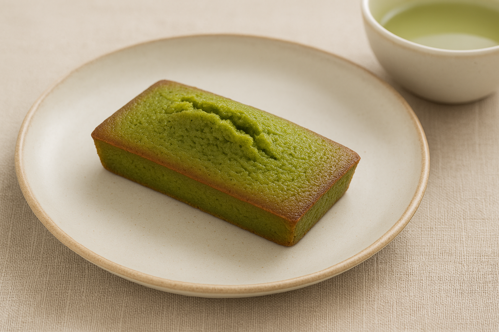

Matcha tea financiers

Description
Discover the perfect balance of sweetness and earthiness with these soft and moist matcha tea financiers.
Delicately crisp on the outside and vibrant green inside, they’re a refined twist on a classic French treat.
Ingredients
- 100g of butter
- 80g of almond powder
- 60g of wheat flour
- 150g of icing sugar
- 3g of matcha tea
- 4 egg whites
Steps
- Melt the butter in the microwave. Let cool.
- Preheat the oven to 180°C (350°F).
- Mix the flour, almond flour, sugar, and matcha tea. Add the egg whites and mix again.
- Gently fold the melted butter into the mixture until smooth.
- Pour the mixture into the financier mold, preferably using a piping bag for convenience.
- Bake for 15 to 20 minutes. Let cool, then remove from the mold.
Original recipe from Amandine Cooking.
Home